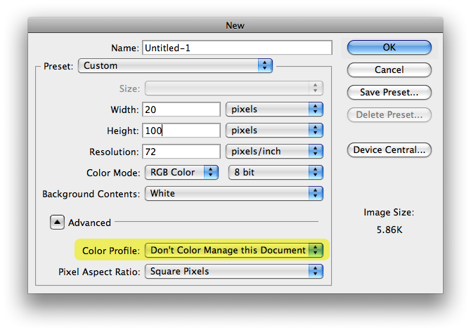

This purple background color is defined in CSS as #6A0138.
Poor: This block contains the gradient JPEG. Notice how the bottom does not match well.
Good: This block contains the gradient JPEG. Notice how the bottom blends out smoothly.

This purple background color is defined in CSS as #6A0138.
Poor: This block contains the gradient JPEG. Notice how the bottom does not match well.
Good: This block contains the gradient JPEG. Notice how the bottom blends out smoothly.
Let’s say I want to create a gradient background that blends with your background color. In the example to the right, you can see the all-too-common problem where the color code you define, doesn’t stay that way once you save the image for the web. The gradient looked great in Photoshop during design time and the Hex color code was perfect.
This information was based on a Smashing Magazine’s “Setting Up Photoshop for Web, App, and iPhone Development.” Another article, Photoshop CS5 Color Management, goes into much more detail and explains why/how color management works.
Assign the “Don’t Color Manage This Document” profile. For new documents, this can be done in the new document dialog box.

For existing images, choose Edit → Assign Profile...
Set your Color Settings to “Monitor Color”. From the menu, choose Edit → Color Settings...
The important piece you are setting here is the RGB Working Space gets set to your Monitor RGB color space.